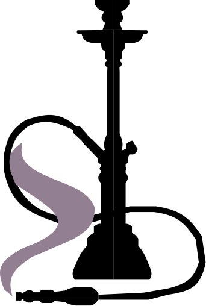
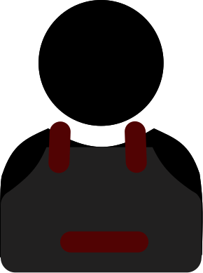
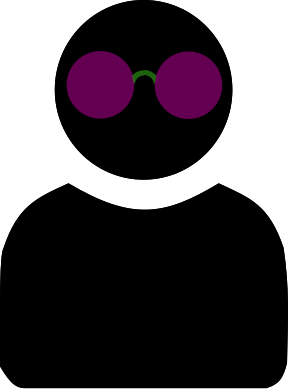
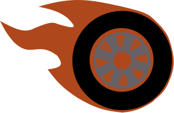
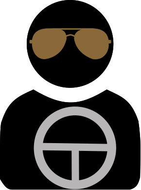

Слушай, дорогой, садись - история будет, вай, ме. Я Ашот, грузин, шаурму люблю.
Курящий водитель
от 590₽

Слушай, дорогой, вот тебе первый тариф — вай, ме! Помнишь мою историю? Хватит нюхать чужой табак. Здесь кальян включён в стоимость — садись, раскуривай, дым в окно, угли поправим. Водитель тоже с дымком, но за рулём — как скала. Кальянщик приедет вместе с машиной, всё культурно, как в лучших домах Тбилиси. А в конце — купон на шаурму у моего тёзки. Кури, дорогой, но помни: шаурма — это святое!
Покушай братишка
от 490₽

Этот тариф для тех, кто едет не просто так, а с аппетитом. Заказываешь поездку — и пока мы едем, у тебя уже горячая шаурма, соус фирменный, всё как надо. Едем — кушаем, всё по-нашему, по-грузински. Но вот честно, брат, до сих пор в голове не укладывается: как он этот вертел с мясом туда поместил, чтобы шаурму горячую делать? Сам в шоке! Наверное, у него мотор как у «Мерседеса» — тянет будь здоров. Зато шаурма всегда с пылу с жару. Заказывай, брат, голодным не уедешь!
Сам делал, брат
от 690₽
Для ценителей прекрасного. В багажнике у нашего водителя всегда стоит бочка с домашним вином, так что поездка будет не только комфортной, но и с правильным настроением. Пока едем, он расскажет, какое вино лучше к какому тосту. Однажды один наш водитель так увлёкся дегустацией, что привёз клиента не туда, куда он просил, а туда, где лучше наливают. Но клиент не обиделся — вино было отличное!
С ветерком
от 450₽

Для тех, кто опаздывает на самолёт, на свидание или на важную встречу. Наш водитель доставит с ветерком, как на «Формуле-1», только с грузинским акцентом. Летит так, что ГИБДД нас фотографирует на память! Но не бойся, брат, тормоза у него как совесть — всегда срабатывают вовремя.
Душевная поездка
от 550₽Это для тех, кому нужен не просто водитель, а настоящий друг. Будете говорить за жизнь, петь песни, и он расскажет тебе пару старых грузинских тостов. Однажды один пассажир так с нашим водителем заговорился, что они проехали нужную остановку и дважды объехали Тбилиси. Зато теперь они родственники!
Обычный
от 199₽Для тех, кому просто нужно доехать из точки А в точку Б. Без лишних разговоров, без тостов, без шашлыка. Ну, насколько это возможно. Всё равно водитель угостит тебя конфеткой и спросит, как дела. Просто потому что он грузин, а не робот!